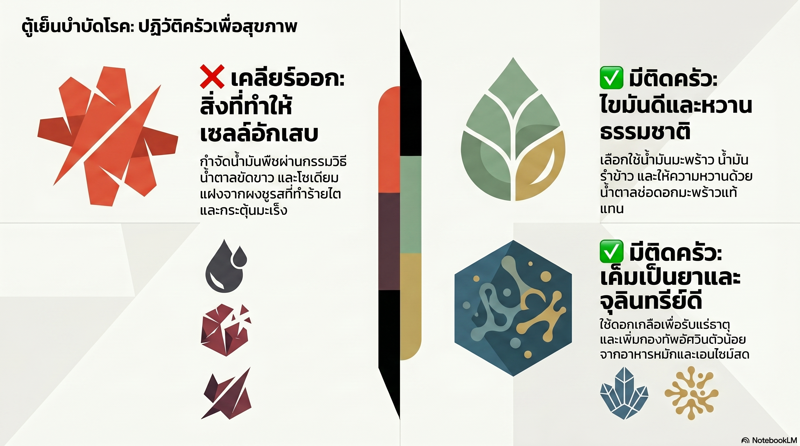
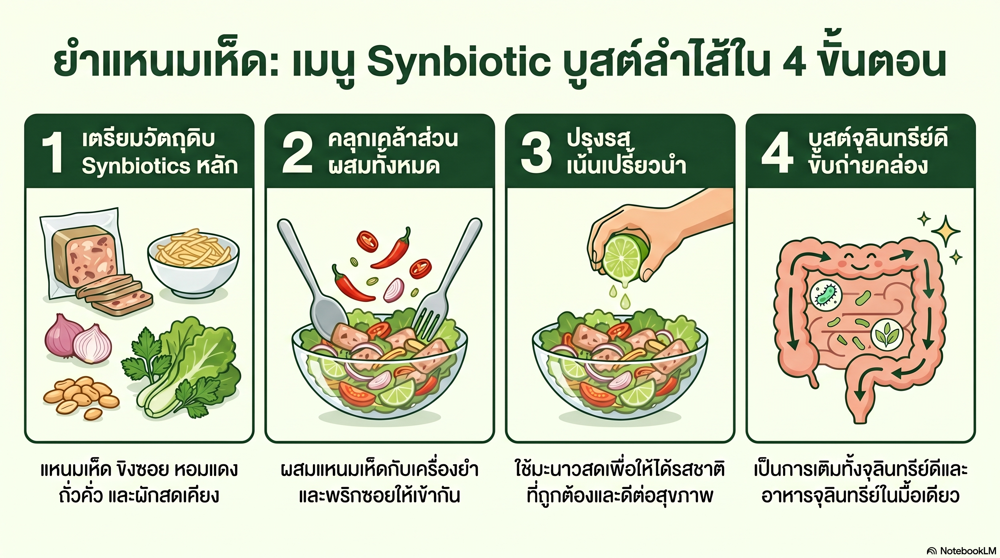
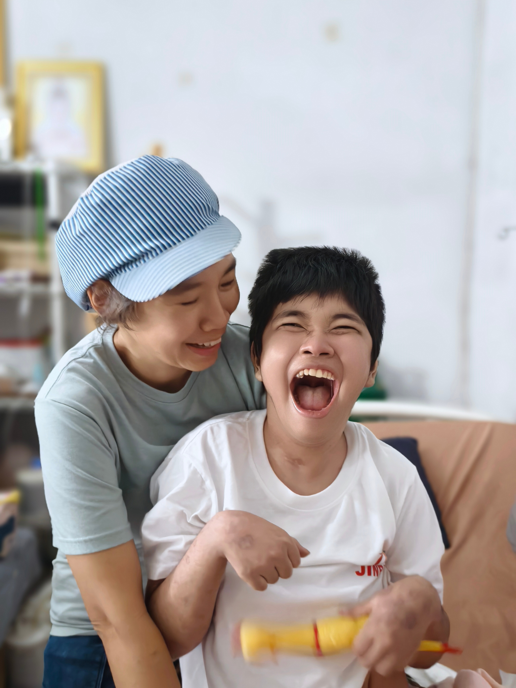

E-Book ฉบับสมบูรณ์
กินเป็น หลับดี ขับถ่ายคล่อง
วิชาคุณแม่นักสู้ ปรุงอาหารฟื้นฟูระดับเซลล์ สไตล์วัย 50+
วิชาคุณแม่นักสู้ ปรุงอาหารฟื้นฟูระดับเซลล์ สไตล์วัย 50+

แม่นักสู้ที่เปลี่ยนห้องครัวให้เป็นโอสถศาลาเพื่อฟื้นฟูชีวิตลูกสาว ผ่านประสบการณ์จริงและการศึกษาด้านโภชนบำบัด
"เพราะอาหารรสมือแม่... คือยาที่อร่อยที่สุด"
สงวนลิขสิทธิ์ © 2024 ร้านอ้อโฮมเมด — ห้ามคัดลอก ดัดแปลง หรือนำเนื้อหาไปใช้ทางการค้าโดยไม่ได้รับอนุญาต

สวัสดีค่ะ อ้อเขียนจดหมายฉบับนี้ขึ้นมา ในฐานะ 'แม่' คนหนึ่งที่เคยผ่านคืนวันที่มืดมนที่สุด เมื่อลูกสาวสุดที่รัก 'น้องชุนเทียน' ต้องล้มป่วยด้วยโรคภูมิคุ้มกันทำลายสมอง (Anti-NMDA Receptor Encephalitis) วินาทีที่เห็นลูกชักจนต้องเข้า ICU นานถึง 45 วัน รักษาตัวในโรงพยาบาลกว่า 5 เดือน และต้องให้คีโมต่อเนื่องอีก 20 เดือน... อาการลูกมีแต่ทรงกับทรุด หัวใจคนเป็นแม่อย่างอ้อมันสลายค่ะ
แต่อ้อบอกตัวเองว่า 'เรายอมแพ้ไม่ได้' อ้อเริ่มค้นหาวิธีฟื้นฟูร่างกายลูกทุกวิถีทาง ไม่ยอมฝากชีวิตลูกไว้กับยาเคมีเพียงอย่างเดียว จนฟ้าเมตตาให้อ้อได้พบกับ ท่านอาจารย์ ดร.อานนท์ เอื้อตระกูล ปรมาจารย์ด้านโภชนบำบัด ท่านเปิดโลกให้อ้อรู้จัก 'อาหารหมักอนามัย' และพลังของ 'อัศวินตัวน้อย' (จุลินทรีย์ดี) ที่เข้าไปช่วยปรับสมดุลภูมิคุ้มกันที่เพี้ยนให้กลับมาปกติ
อ้อตัดสินใจปฏิวัติห้องครัวใหม่ทั้งหมด ใช้อาหารเป็นยาปรุงให้ชุนเทียนทานทุกมื้อ จนปาฏิหาริย์เกิดขึ้น... แม้วันนี้ชุนเทียนจะยังป่วยติดเตียงและพูดได้แค่คำว่า 'แม่' แต่อาการลูกดีขึ้นมาก ระบบภูมิคุ้มกันกลับมาสมดุล ร่างกายแข็งแรงขึ้น ลูกกลับมามีเสียงหัวเราะและรอยยิ้มที่สดใสให้แม่อีกครั้ง
E-Book เล่มนี้ไม่ใช่แค่ตำราอาหาร แต่มันคือ 'บันทึกการต่อสู้' และ 'สูตรลับก้นครัว' ที่อ้อใช้กอบกู้ชีวิตลูกและครอบครัว อ้อมอบวิชานี้ให้ทุกท่านด้วยความรัก เพื่อให้ทุกท่านมีเกราะป้องกันโรคภัยและมีความสุขในทุกมื้ออาหารค่ะ

ก่อนที่เราจะเริ่มซ่อมแซม อ้ออยากให้ทุกคนลองสำรวจตัวเองดูค่ะ ว่าร่างกายที่เคยแข็งแรง วันนี้กำลังส่งสัญญาณขอความช่วยเหลืออยู่หรือไม่? การมีอายุที่เพิ่มขึ้นไม่ได้หมายความว่าเราต้องทนกับความเจ็บปวดเสมอไปนะคะ
ลองแตะเลือกดูนะคะ ว่าท่านมีอาการเหล่านี้เกิน 3 ข้อหรือไม่?

ท่านทราบไหมคะว่า ลำไส้ไม่ใช่แค่ท่อระบายของเสีย แต่ลำไส้ของเราคือ 'สมองที่สอง' (Gut-Brain Axis) ที่มีเส้นประสาทเชื่อมตรงถึงสมองที่ศีรษะ!
ความลับสำคัญคือ สารเซโรโทนิน (Serotonin) ที่ทำให้เราอารมณ์ดีและหลับลึกกว่า 90% ถูกสร้างขึ้นที่ลำไส้ ไม่ใช่สมองค่ะ!
ถ้าลำไส้เราเครียด เต็มไปด้วยแบคทีเรียเลวและอาหารตกค้างบูดเน่า (จากการกินอาหารแปรรูป น้ำตาลเยอะ) ลำไส้จะส่งสัญญาณเครียดไปที่สมอง ทำให้เรานอนไม่หลับ หงุดหงิด และปวดเมื่อย
อัศวินเหล่านี้คือ โพรไบโอติกส์ (Probiotics) จุลินทรีย์ดีนับล้านตัวที่รอการเติมเข้าไปผ่านอาหารหมักอนามัย
เข้าไปยึดผนังลำไส้ ขับไล่แบคทีเรียเลว
ย่อยอาหารตกค้าง ลดลมและแก๊สพิษ
กว่า 70% ของภูมิคุ้มกันอยู่ที่ลำไส้ อัศวินตัวน้อยคือทหารฝึกภูมิคุ้มกัน
ทันทีที่เติมอัศวินตัวน้อยเข้าไป — ลำไส้สะอาด สมองผ่อนคลาย ร่างกายมีพลังอีกครั้ง 💚

หลายคนถามอ้อว่า ทำไมตอนสาวๆ กินหมูกระทะดึกๆ ตื่นมาก็ย่อยหมด แต่พอวัย 50+ กินข้าวนิดเดียวก็แน่นไปถึงคอ? คำตอบอยู่ที่คำว่า 'เอนไซม์' ค่ะ
เอนไซม์คือ 'ประกายไฟแห่งชีวิต' ร่างกายเราเหมือนมีธนาคารเอนไซม์มาตั้งแต่เกิด ยิ่งเราอายุมากขึ้น หรือกินอาหารแปรรูปเยอะๆ เอนไซม์ในธนาคารก็ยิ่งร่อยหรอ เมื่อไม่มีเอนไซม์ อาหารที่กินเข้าไปก็ไม่ถูกย่อย แต่จะไป 'เน่าบูด' ในลำไส้ กลายเป็นแก๊สพิษและกรดไหลย้อน
รู้ไหมคะว่า น้ำลายของเรามีเอนไซม์ 'อะไมเลส' ที่ช่วยย่อยแป้งและน้ำตาลได้ดีเยี่ยม
เคี้ยวอาหาร 30-50 ครั้งต่อคำ
อาหารจะกลายเป็นเนื้อละเอียดผสมกับเอนไซม์จากน้ำลาย กระเพาะและลำไส้ก็ไม่ต้องทำงานหนัก เท่านี้อาการท้องอืดก็หายไปกว่าครึ่งแล้วค่ะ!

การดูแลสุขภาพให้กลับมาแข็งแรง ไม่ได้จบแค่เรื่องกินค่ะ แต่อ้อใช้หลัก '6 เสาหลักสุขภาพ' ซึ่งเป็นจิ๊กซอว์ที่ขาดชิ้นใดชิ้นหนึ่งไปไม่ได้เลย
กินให้เป็นยา เน้นอาหารที่มีชีวิต อาหารหมักอนามัยธรรมชาติ
น้ำคือตัวพาเอนไซม์ แนะนำ 'น้ำด่างมีชีวิต' — หยดน้ำมะกรูด/มะนาวดอง 1 หยดในน้ำดื่ม เพื่อปรับเลือดให้สะอาด
ฝึกหายใจลึกๆ (Deep Breathing) เพื่อเติมออกซิเจนให้เซลล์
ความเครียดทำลายจุลินทรีย์ดี อารมณ์ดีและเสียงหัวเราะคืออาหารชั้นยอด
ไม่ต้องหักโหม แค่ขยับให้ลำไส้เคลื่อนไหว ลองท่าบิดเอวเบาๆ
ช่วงเวลาซ่อมแซมที่ดีที่สุดของเซลล์ ต้องเตรียมร่างกายให้พร้อมก่อนนอน

จุดเริ่มต้นของโรงพยาบาลในบ้าน คือ 'ตู้เย็น' ของเราค่ะ วันนี้อ้อขอชวนทุกคนมาเคลียร์ตู้เย็น ปฏิวัติครัวกันใหม่ อะไรที่ทำให้เซลล์อักเสบ เราต้องกล้าทิ้งค่ะ!

จากเห็ดและผลไม้ — ตัวช่วยย่อยชั้นยอด
โปรตีนบริสุทธิ์ ย่อยง่าย ไม่ท้องผูก เหมาะสร้างกล้ามเนื้อวัย 50+
อุดมด้วยสารต้านแก่อันโทไซยานิน และยีสต์ธรรมชาติที่ช่วยให้หลับลึก

• สับปะรด (รวมแกน) 1 ถ้วย
• กล้วยน้ำว้า 1 ลูก
• ขิงสด 2-3 แว่น
• น้ำเอนไซม์เห็ดเข้มข้น 1 ช้อนโต๊ะ
• น้ำสะอาดหรือน้ำมะพร้าว ½ ถ้วย
ปั่นรวมกันจนเนื้อเนียน จิบทีละนิดและเคี้ยวเบาๆ ก่อนกลืน

• เทมเป้สด (อ้อโฮมเมด) หั่นเต๋า 1 ถ้วย
• กระเทียม/พริกโขลก
• ใบกะเพราป่า
• เครื่องปรุง: ดอกเกลือ น้ำตาลมะพร้าว
• น้ำมันมะพร้าว
จี่เทมเป้ให้เหลือง แล้วผัดกับพริกกระเทียม ปรุงรสอ่อนๆ ใส่ใบกะเพรา

• แหนมเห็ดอนามัย (อ้อโฮมเมด) 1 ห่อ
• ขิงซอย หอมแดงซอย ถั่วคั่ว
• ผักสด
• น้ำมะนาวสด พริกซอย
คลุกแหนมเห็ดกับเครื่องยำ เน้นรสเปรี้ยวนำจากมะนาวสด

• ข้าวหมากข้าวก่ำ 1-2 ช้อนโต๊ะ
• กะทิสดเล็กน้อย (ถ้าชอบ)
ทานก่อนนอน 1-2 ชั่วโมง

อ้อสรุปมาให้แล้วค่ะ ว่าจะใช้ 'อาวุธ' ของอ้อโฮมเมดดูแลตัวเองในหนึ่งวันได้อย่างไร:
หยดน้ำมะกรูด/มะนาวดองในน้ำอุ่น เริ่มต้นวันด้วยการล้างพิษ
เตรียมระบบย่อยให้พร้อมรับอาหาร
เพิ่มโปรตีนดีและจุลินทรีย์ให้ร่างกาย
เติมพลังกลางวันด้วยเอนไซม์สดจากผลไม้
ปิดสวิตช์สมอง ให้ร่างกายเข้าโหมดซ่อมแซม

ขอบคุณที่ไว้วางใจให้อ้อดูแลสุขภาพของท่าน ขอให้วิชาคุณแม่นักสู้นี้ เป็นเกราะป้องกันภัยไข้เจ็บให้ทุกท่าน และขอให้ครัวของท่านเป็นครัวแห่งความสุขตลอดไปค่ะ